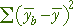
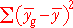

Sums of squares
To compare the means of several groups from independent samples (e.g. from a completely randomised experiment with no blocks), we split the total sum of squares into two components — a sum of squares between groups (or treatments) and residual sum of squares within groups.
We next extend the idea of splitting the total sum of squares in a way that also takes account of variability between blocks.
Notation
In a randomised block design, we use the following notation:
| ybgr | the rth of the observations in block b that get treatment g |
| mean response in block b | |
| mean response for all observations getting treatment g | |
| overall mean response for all observations |
In many examples, there is only a single observation for each combination of block and treatment, but our notation allows for two or more (as in the amino acid uptake example on the previous page).
Total variation
This is defined in the same way as earlier:
| The total sum of squares reflects the total variability of the response. |
Variation between blocks
|  | The sum of squares between blocks measures the variability of the block means. |
Note that this summation is also over all observations in the data set.
Variation between treatments
|  | The sum of squares between treatments measures the variability of the treatment means. |
This summation is again over all observations in the data set.
Sums of squares explained by blocks and treatments
The diagram below shows the dental pain relief data.
The horizontal coloured lines initially show the differences between the treatment mean and overall mean for each observation. Their sum of squares is the treatment sum of squares.
| The treatment sum of squares is identical to the treatment sum of squares in the anova table on the previous page after removing block effects. |
Select Block sum of squares from the pop-up menu. The coloured lines now show the difference between each observation's block mean and the overall mean. Their sum of squares is the block sum of squares.
Residuals and residual variation
As in regression, we define residuals to be the difference between the recorded response values and the closest we can get from our model. For a randomised block model, the best estimate is:
 = b0 + b1 xi
= b0 + b1 xi
This can be interpreted as:
| The residual sum of squares describes the variation that is unexplained by blocks or treatments. |
Relationship between sums of squares
The following relationship is not easy to prove but is important.
The block and treatment sums of squares are variation that is explained by the randomised block model whereas the residual sum of squares is unexplained.
Acupuncture and Codeine for dental pain relief
An anaesthetist conducted an experiment to assess the effects of codeine and acupuncture for relieving dental pain. The experiment used 32 subjects who were grouped into blocks of 4 according to an initial assessment of their tolerance to pain.
The horizontal lines are initially the differences between the observations and the overall mean. Their sum of squares is the total sum of squares.
The vertical lines in each block show the block means. Click Remove block effect to add a constant to all the values in each block making its block mean equal to the overall mean. The reduction in the total sum of squares is equal to the block sum of squares, so the sum of squares of the horizontal lines is now the sum of the factor and residual sums of squares.
Finally click Group by treatments to rearrange the observations by treatment. The treatment means differ so click Remove treatment effect to adjust them to be all equal to the overall mean. The horizontal lines are now the residuals from the randomised block model and their sum of squares is the residual sum of squares from the full model with both block and factor terms.
The residual sum of squares is identical to the residual sum of squares in the anova table on the previous page after removing block effects.